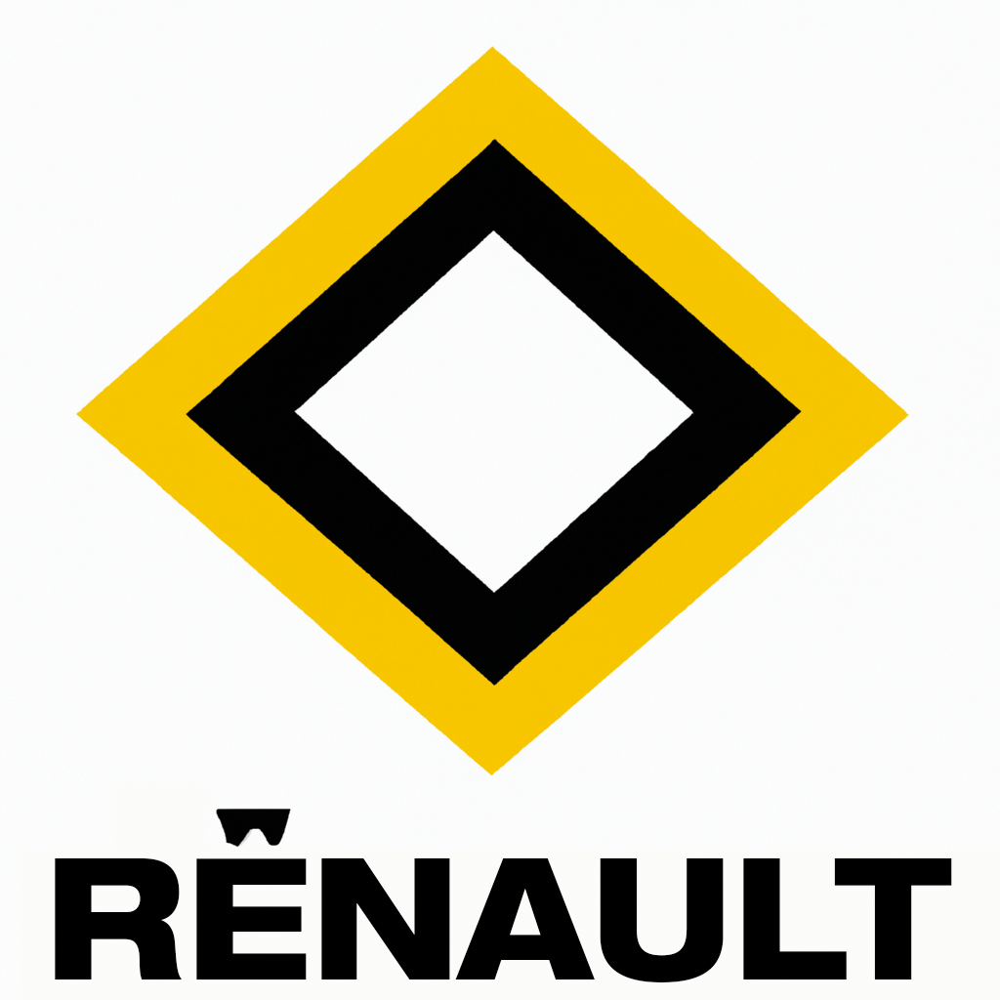
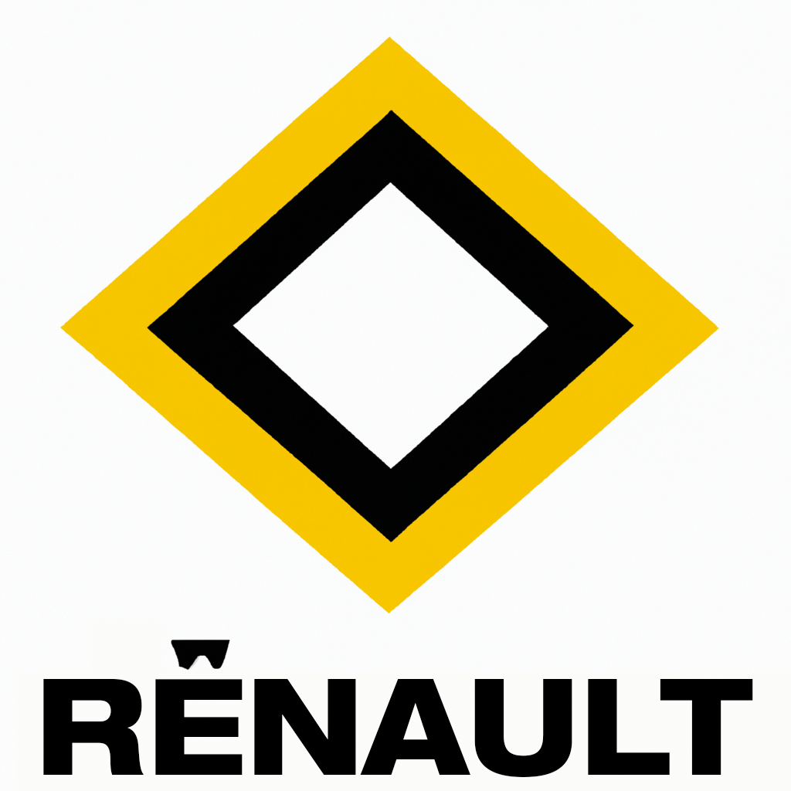
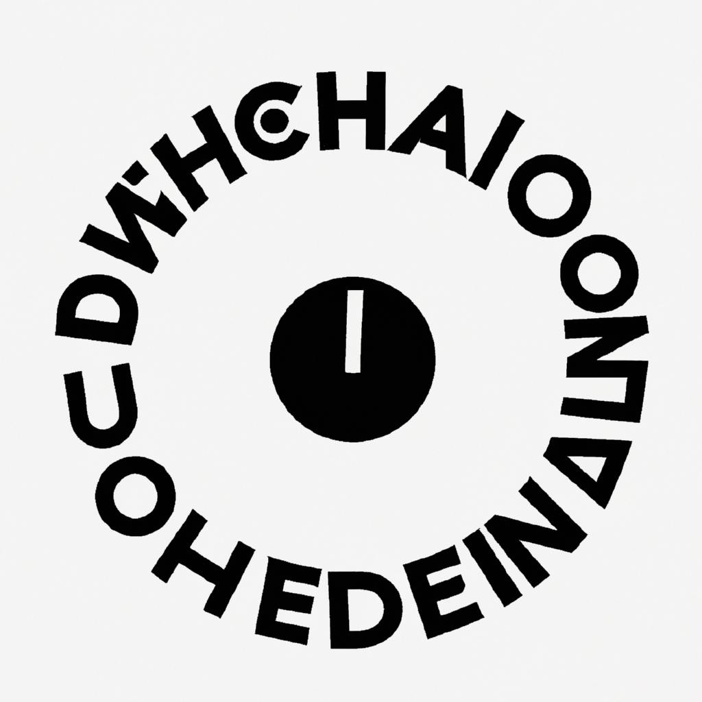
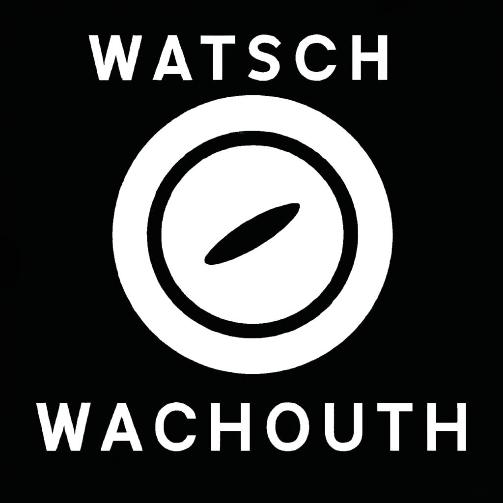
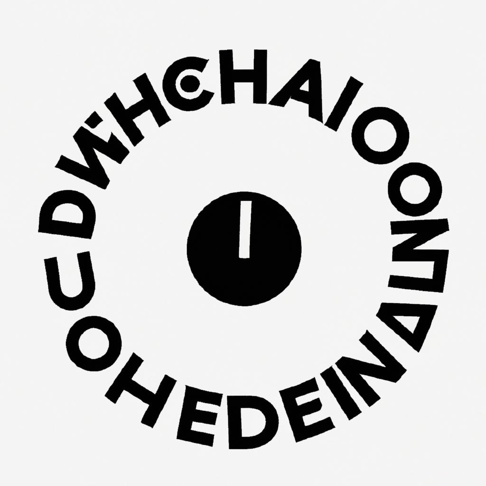
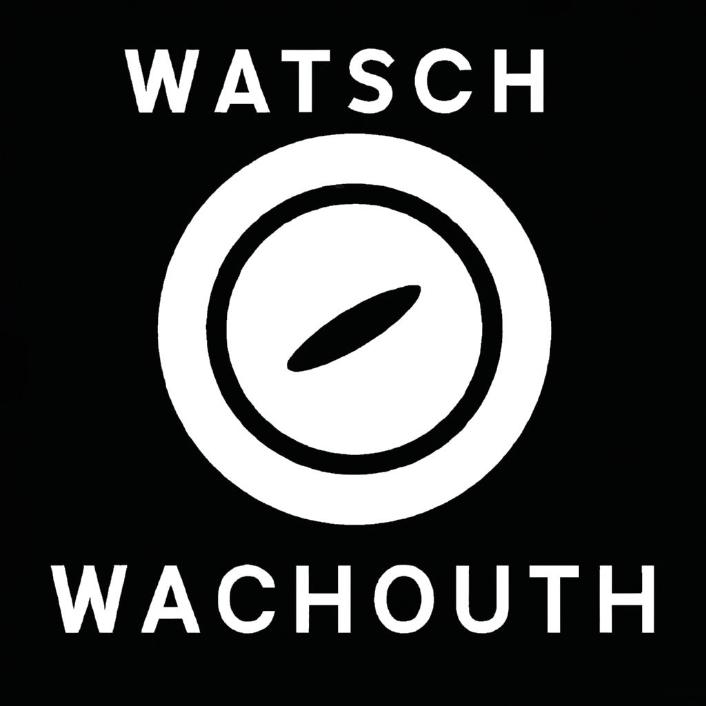

Dufour
Foundation

Buy the Book
Welcome to the Archive of the Michel Dufour Foundation, an online gallery that aims to showcase the entire collection of works created by the renowned graphic designer Michel Dufour. As a pioneer of the minimalist and modernist approach to design, Dufour's legacy has had a profound impact on the graphic design world, inspiring countless designers and artists around the world.
Our archive is dedicated to preserving and promoting Dufour's work, spanning from his earliest projects to his final works. Through this gallery, you will be able to explore his various design projects, including his iconic poster designs, book covers, corporate identities, and editorial designs. The archive also includes a wide range of materials, such as sketches, notes, photographs, and other related documents, that provide insights into Dufour's design process and the context in which he worked.
We invite you to browse through the Archive of the Michel Dufour Foundation and discover the works of one of the most innovative and influential graphic designers of the 20th century.
Back to Home
 

 





Michel Dufour is a fictional graphic designer whose face, works, life and ideas were completely invented by Artificial Intelligences. ChatGPT invented his life and his monograph “Graphisme”, of which it also wrote every text. Dall-E created each of his works, based on the descriptions given by ChatGPT. Calligrapher.ai simulated his writing in his signature and in the letters between him and Paul Rand. The book was completely invented, conceptualized and wrote by ChatGPT from the following initial prompt: “Tell me the story of the greatest graphic designer no one has ever heard of.” This project was made by students Lorenzo Cicinato, Valentina Orfeo and Carlo Schlatter as a result of the workshop titled A.I. — Blessing or curse for Graphic Design?, held by Laurenz Brunner and curated by Jonathan Pierini at ISIA Urbino, march 2023.
Michel Dufour is a fictional character. Please don’t fall for scams and don’t buy his book. But if you do, buy it from us.